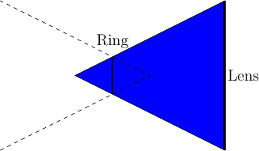
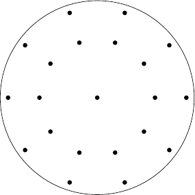

Beam Emission Spectroscopy (BES) Directory¶
In order to compare the exact density fluctuation and the BES diagnostics, two classes have been created. A first one that implement the diagnostics (BES) and a second one that copy the structure of the diagnostics and just take density value at the focus points (BES_ideal).
Beam Emission Spectroscopy¶
- class FPSDP.Diagnostics.BES.bes.BES(input_file, parallel=False)[source]¶
Class computing the image of all the fibers.
Load the parameter from a config file and create everything from it. The function get_bes() is used for computing the intensity received by each fiber (number of photons per second).
Parameters: - input_file (str) – Name of the config file
- parallel (bool) – Choice between the serial code or the parallel one
Variables: - self.cfg_fil (str) – Name of the config file
- self.para (bool) – Choice between the serial code and the parallel one
- self.pos_lens (np.array[3]) – Position of the lens (in the cartesian system)
- self.rad_ring (np.array[Nfib]) – Radius of the focus point for each fiber
- self.rad_lens (float) – Radius of the lens
- self.inter (float) – Cutoff distance from the focus point (in unit of the beam width)
- self.Nint (int) – Number of point for splitting the integral over the optical direction
- self.Nsol (int) – Number of interval for the evaluation of the solid angle in the mixed case
- self.pos_foc (np.array[Nfib,3]) – Position of the focus points (in the cartesian system)
- self.op_direc (np.array[Nfib,3]) – Direction of the optical line (for each fiber)
- self.dist (np.array[Nfib]) – Distance between the focus point and the lens
- self.perp1 (np.array[Nfib,3]) – Second basis vector for each fiber coordinates (first is the optical line)
- self.perp2 (np.array[Nfib,3]) – Third basis vector
- self.type_int (str) – choice between the full computation of the intensity or only over the central line (‘1D’ or ‘2D’)
- self.t_max (float) – Cutoff time for the lifetime effect (in unit of the lifetime). If set to 0, the lifetime will not be taken in account
- self.lifetime (bool) – Choice between using the lifetime effect or not
- self.tau_max (float) – Upper limit for the lifetime of the excited particles. It does not need to be exact, it is only for computing the limits of the mesh.
- self.N_field (int) – Number of interval for the field line interpolation
- self.data_path (str) – Path to the data
- self.beam – (Beam1D) Beam used for the diagnostic
- self.time (np.array[Ntime]) – Time steps used for the simulation
- self.filter (tck_interp) – Interpolant of the filter
- self.wl0 (float) – Wavelength of the de-excitation photons
- self.Xmax (float) – Upper limit of the X coordinate
- self.Xmin (float) – Lower limit of the X coordinate
- self.Ymax (float) – Upper limit of the Y coordinate
- self.Ymin (float) – Lower limit of the Y coordinate
- self.Zmax (float) – Upper limit of the Z coordinate
- self.Zmin (float) – Lower limit of the Z coordinate
- self.limits (np.array[3,2]) – Limits of the mesh (first index for X,Y,Z and second for max,min)
- check_in(pos, fib)[source]¶
Check if the position (optical coordinate) is inside the first cone (blue area) (if the focus ring matter or not). The shape of the sampling area is asume to be linear along the z-axis (optic direction).

Parameters: - pos (np.array[N,3]) – Position in the optical system
- fib (int) – Index of the fiber
Returns: True if inside the first cone
Return type: np.array[N] of bool
- compute_limits(eps=0.05, dxmin=0.1, dymin=0.1, dzmin=0.1)[source]¶
Compute the limits of the mesh that should be loaded
The only limitations comes from the sampling volume and the lifetime of the excited state. In the figure below, blue is for the beam and the lifetime effect, red for the ring and the cutoff values, straight black lines are for the sampling volume, and, the dashed one are the box.
![% beam
\draw[blue] (-5,0.5) -- (7,0.5);
\draw[blue] (-5,-0.5) -- (7,-0.5);
\node[blue] at (-4.5,0) {Beam};
\draw[->,thick,blue] (-3.5,0) -- (-2.5,0);
% Sampling volume + ring
\draw (3,-3.7) -- (2.8,-0.1);
\draw (3.4,0.1) -- (6,-2.8);
\draw (0.4,2.5) -- (2.8,-0.1);
\draw (3.4,0.1) -- (3,2.9);
\draw[red] (2.8,-0.1) -- (3.4,0.1);
%cutoff
\draw[red] (2.825,-1) -- (4,-0.56);
\draw[red] (2.15,0.6) -- (3.25,1);
%lifetime effect
\draw[blue,->] (2.15,0.6) -- (1.65,0.6);
\draw[blue,->] (2.825,-1) -- (2.325,-1);
\draw[blue,->] (4,-0.56) -- (3.5,-0.56);
\draw[blue,->] (3.25,1) -- (2.75,1);
%box
\draw[dashed] (1.5, 1.1) -- (1.5,-1.1) -- (4.1,-1.1) -- (4.1,1.1) -- cycle;](_images/tikz-780c2c8196ce13513b30a547f2466d39f2da7b38.png)
Parameters: - eps (float) – Used for increasing the size of the box (relative size)
- dxmin (float) – Smallest size accepted for the box in X
- dymin (float) – Smallest size accepted for the box in Y
- dzmin (float) – Smallest size accepted for the box in Z
- get_bes()[source]¶
Compute the image of the density turbulence. This function should be the only one used outside the class.
Returns: Intensity collected by each fiber (number of photons) Return type: np.array[Ntime, Nfib]
- get_emis_from(pos, t_, fiber_nber)[source]¶
Compute the total emission received from a position (takes in account the solid angle and the filter). As long as it is possible, the effect of the optic should be written here (a lot more efficient than keeping all the wavelength until the end).
Todo: Improvement possible: keep in memory the solid angle for different time step
Parameters: - pos (np.array[N,3]) – Position in the optical system
- t (int) – Time step to compute
- fiber_nber (int) – Index of the fiber
Returns: Intensity collected from each point
Return type: np.array[N]
- get_solid_angle(pos, fib)[source]¶
Compute the solid angle
Three different cases can happen:
- Lens case
- Ring case
- mixed case
In the following drawing, the vision from a particle that emits some photons is shown. The red circles are for the lens and the black ones are for the ring.
![% lens case
\draw[red] (-5,0) circle(1.5);
\draw (-5,0.3) circle(2);
\node at (-5,2.5) {Lens Case};
% ring case
\draw (0,0) circle(1.5);
\draw[red] (0,0.3) circle(2);
\node at (0,2.5) {Ring Case};
% mixed case
\draw (5,0) circle(1.5);
\draw[red] (5,0.3) circle(1.4);
\node at (5,2.5) {Mixted Case};](_images/tikz-87bcc0c468e7871ddf745936e3298dce8a9cd414.png)
The two first are solved with the formula of Paxton (solid_angle_disk <FPSDP.Maths.Funcs.solid_angle_disk()) and the last one is solved numerically.
Parameters: - pos (np.array[N,3]) – Position in the optical system
- fib (int) – Index of the fiber
Returns: Solid angle
Return type: np.array[N]
- get_width(pos, fiber_nber)[source]¶
Compute the radius of the light cone. Assume two cones that meet at the focus disk.
![\draw (3,3) -- (-2.5,0) -- (3,-3);
\draw[ultra thick] (3,3) -- (3,-3);
\node at (3.5,1.5) {Lens};
\draw[ultra thick] (0,1.35) -- (0,-1.35);
\node at (0, 1.8) {Ring};
\draw[dashed] (-3,3) -- (2.5,0) -- (-3,-3);
\draw[-{Triangle[angle=45:5pt 5]}] (3.6,0) to (-3,0);
\draw (-1.2,0) -- (-1.2,0.7);
%first pos
\node at (-1.5,0.3) {$r_1$};
\node at (-1.2,-0.5) {x};
\node at (-0.6,-0.5) {Pos$_1$};
% second pos
\draw (1.9,0) -- (1.9,0.33);
%\node at (1.9,0.1) {$r_2$};
\node at (1.9,0.6) {x};
\node at (2.45,0.6) {Pos$_2$};](_images/tikz-a949d4e44eb73d34f7734848739e97b1f4b34fe1.png)
Parameters: - pos (np.array[N,3]) – Position where to compute the width in the optical system
- fiber_nber (int) – Index of the fiber
Returns: Radius of the optical cone
Return type: np.array[N]
- intensity(t_, fiber_nber)[source]¶
Compute the light received by a fiber at one time step.
Use a Gauss-Legendre quadrature formula of order 3.
\[I = \int_{-d}^d f(z) \mathrm{d}z \approx \sum_i \frac{b_i-a_i}{2} \sum_j \omega_j f\left(\frac{b_i-a_i}{2}x_j + \frac{a_i+b_i}{2}\right)\]where the index i is for the splitting in subintervals, j is for the Gauss-Legendre formula, \(f(z) = \frac{I_\text{plane}(z)}{A(z)}\) is the light emitted by the planes normalized by its area, \(d = \text{inter} \cdot w\), inter is the cutoff in unit of the average beam width (w), \(a_i\) and \(b_i\) are the lower and upper limits for each intervals, \(\omega\) and \(x_i\) are the weights and points of the quadrature formula. See figure compute_limits() for a view of the situation.
Parameters: - t (int) – Time step to compute
- fiber_nber (int) – Index of the fiber
Returns: Intensity of light collected by the fiber
Return type: float
- intensity_para(i)[source]¶
Same as intensity(), but have only one argument. The only use is for the parallelization that ask only one argument. Use the variable current from the data loader.
Parameters: i (int) – Index of a fiber Returns: Intensity received by the fiber (number of photons per second) Return type: float
- light_from_plane(z, t_, fiber_nber)[source]¶
Compute the light from one plane using a method of order 10 (see report or Abramowitz and Stegun).
\[I_\text{plane} = \iint_D f(x) \mathrm{d}\sigma \approx \sum_i \omega_i f(x_i)\]where \(f(x)\) is the value obtained by get_emis_from(), D is the disk representing the plane, and, \(\omega_i\) and \(x_i\) are the weights and the points of the quadrature formula.
The points are given in the figure below and the weights are \(\frac{1}{9}\) for the center, \(\frac{16\pm\sqrt{6}}{360}\) for the innermost circle (plus sign) and the outermost circle (minus sign)

Parameters: - z (np.array[N]) – Distance from the fiber along the sightline
- t (int) – Time step to compute (is not important for the data loader, but is used as a check)
- fiber_nber (int) – Index of the fiber
Returns: Intensity collected by the fiber from these planes
Return type: np.array[N]
- load_filter(filter_name)[source]¶
Load the data from the filter and compute the interpolant.
Parameters: filter_name (str) – Name of the file containing the filter datas Returns: Interpolant Return type: tck_interp
- solid_angle_mix_case(pos, x, y, fib)[source]¶
Compute numerically the solid angle for the mixted case (where the lens AND the ring limit the size of the solid angle)
The view from the emission point is given in the figure below. The light collected by the fiber is within the continuous lines.
![\draw [red,dashed,domain=115:180] plot ({4*cos(\x)}, {4*sin(\x)});
\draw [red,dashed,domain=360:425] plot ({4*cos(\x)}, {4*sin(\x)});
\draw [black,thick,domain=150:390] plot ({2*cos(\x)}, {8/3+2*sin(\x)});
\draw [red,thick,domain=65:115] plot ({4*cos(\x)}, {4*sin(\x)});
\draw [black,dashed,domain=30:150] plot ({2*cos(\x)}, {8/3+2*sin(\x)});
\node at ({-5*2/3},0) {Lens};
\node at ({2.4*2/3},{2/3}) {Ring};
\node at ({2.66*2/3},{5.38*2/3}) {x};
\node at ({3.2*2/3},{5.8*2/3}) {$x_2$,$y_2$};
\node at ({-2.66*2/3},{5.38*2/3}) {x};
\node at ({-3.2*2/3},{5.8*2/3}) {$x_1$,$y_1$};](_images/tikz-0b50ec51de9e2f9fdf0d2d412b87dbc1d8dea16c.png)
Parameters: - pos (np.array[N,3]) – Position in the optical system
- x (list[np.array[N],..]) – Position of the intersection on the ring (list contains 2 elements)
- y (list[np.array[N],..]) – Position of the intersection on the lens (list contains 2 elements)
- fib (int) – Index of the fiber
- solid_angle_seg(pos, x, r, islens)[source]¶
Compute the solid angle of a disk where a segment has been removed.
First, the numerical integration will be carried out over the biggest area of the disk, and, in a second time, if necessary, the integral over the full disk is computed (with the analytical formula) and subtracted by the numerical integral.
The idea is to compute numerically the 2D integral by splitting the domain in sector of the same angle and doing a Gauss-Legendre quadrature formula over each dimension.
In a first time, the maximum radius (that will depends on the coordinate \(\omega\)) has to be compute.
In this figure, we want to compute the area between the black line and the blue one
![\draw [red,dashed,domain=115:180] plot ({6*cos(\x)}, {6*sin(\x)});
\draw [red,dashed,domain=360:425] plot ({6*cos(\x)}, {6*sin(\x)});
\draw [black,thick,domain=150:390] plot ({3*cos(\x)}, {4+3*sin(\x)});
\draw [red,thick,domain=65:115] plot ({6*cos(\x)}, {6*sin(\x)});
\draw [black,dashed,domain=30:150] plot ({3*cos(\x)}, {4+3*sin(\x)});
\draw [domain=-10:80] plot ({0.8*cos(\x)}, {4+0.8*sin(\x)});
\node at (1,4.6) {$\theta$};
\node at (-5,0) {Lens};
\node at (2.4,1) {Ring};
\node at (0,0) {x};
\node at (0,4) {x};
\draw (0,4) -- (0.51,6.94);
\draw (0,4) -- ({3*cos(-10)}, {4+3*sin(-10)});
\node at (2.66,5.38) {x};
\node at (3.2,5.8) {$x_2$,$y_2$};
\node at (-2.66,5.38) {x};
\node at (-3.2,5.8) {$x_1$,$y_1$};
\draw [blue] (-2.66,5.38) -- (2.66,5.38);
\node at (0.25,5.4) {x};
\node at (0.8,5.2) {$r_{max}$};](_images/tikz-26474fc0c8cf31bb4059adec29c3e7665698ae47.png)
Todo: improvement: remove useless computation of rmax
Parameters: - pos (np.array[N,3]) – Position in the optical system
- x (list[np.array[N],..]) – Position of the intersection on the ring (list contains 2 elements)
- r (float) – Radius of the disk (should be centered at (0,0,0) and the perpendicular should be along the z-axis)
- islens (bool) – True if the computation is for the lens (change of sign if it is the case)
Raw Electron Density Fluctuations¶
- class FPSDP.Diagnostics.BES.bes.BES_ideal(input_file, mesh=False)[source]¶
Take the output of the simulation and just compute the fluctuation A lot of copy and paste from the BES class, therefore look there for the comments